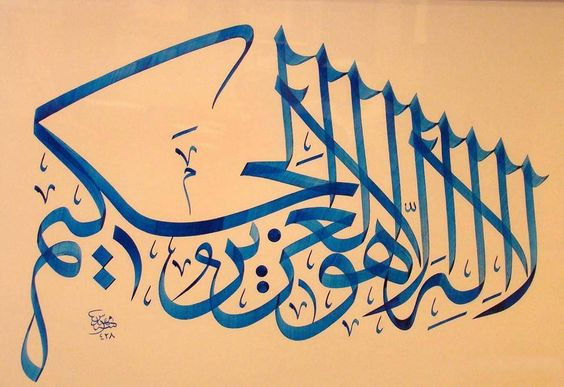

Kitabımızda en sık kullanılan isim çifti "el-Azîz, el-Hakîm" ya da belirsiz "Azîzen Hakîmen" olarak geçen İzzet ve Hikmet sıfatları. Birlikte tam 47 ayetin sonunda kullanılmış, hepsi de bu sırada. 
Bu iki isim birlikte çok anlamlı: Mutlak güç (izzet) olmasaydı hikmetini gösteremezdi. Hikmet olmasaydı güç anlamsız ve faydasız kalırdı. İnsanlar Allah'ın izzetine sık sık şahit oluyorlar, lakin hikmetini bilmeyince "her şey boşuna" izlenimi çok yaygın.
O Allah’tır, yaratan, var eden, şekil veren. En güzel isimler O'nundur. Göklerde ve yerde olanlar O'nu tesbih eder. Mutlak güç ve hikmet sahibidir.
Böylece Haşr Suresinin son üç ayetinde geçen 14 güzel kelimeye, bunlarla ilgili "el-Mâlik" ve "el-Hallâk" isimlerini ekleyerek sayfayı tamamladık. Bu ve sonraki sayfalarda, birlikte kullanılan isim çiftlerini görüyoruz.